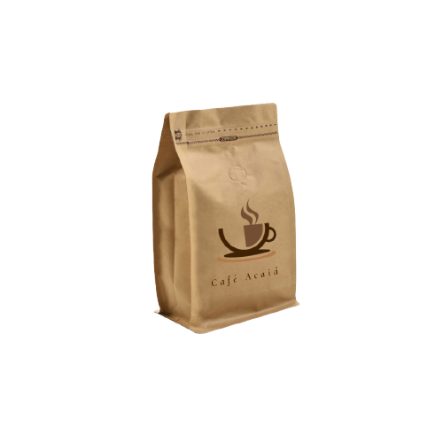

| Produtos

Café Acaiá
Considerado um café especial e raro, o café acaiá também é uma variante do arábica que encontrou prosperidade em solos brasileiros. É um café suave, com notas frutadas, corpo equilibrado e acidez mediana.
R$50,00
Café Arábica
Plantado em altitudes acima de 800 metros, o café arábica não tem um alto teor de cafeína mas conta com uma complexidade de aromas sendo escolhido para bebidas em ocasiões especiais.
R$40,00
Café Bourbon
Uma variante do café arábica, o bourbon conta com um aroma intenso, sabor complexo com notas de avelã. Sua plantação também ocorre acima de 800 metros.
R$45,00
Café Catuaí
É o café desenvolvido 100% em território brasileiro, com o objetivo de facilitar a rotina dos produtores. Sua planta pode ser cultivada acima de 1000 metros e é mais resistente.
R$35,00
Café Robusta
Textura suave, baixa acidez e um corpo pesado por conta das notas amargas, o café robusta tem o dobro de cafeína do contida no arábica e é um dos grãos mais produzidos no mundo por conta da sua resistência.
R$35,00